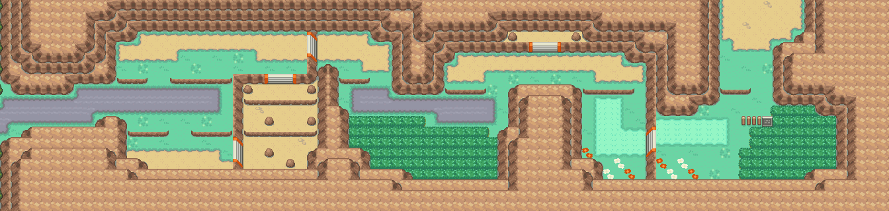

橙橙果
让宝可梦使用或携带， 可以在战斗时回复10HP。
获取：漩涡岛(37,18) ／ 3号公路(23,8) ／ 25号公路(33,7) ／ 40号水路(3,8) ／ 31号道路(18,9) ／ 若叶镇 ／ 32号道路 ／ 湛蓝市(4,4) ／ …等 15 处
用途
让宝可梦使用或携带， 可以在战斗时回复10HP。
标价 20 口袋：树果袋
获取方式
地面隐藏
- 漩涡岛（区域176） · (37,18) · 数量 1 · 地图｜静态图
- 3号公路（区域103） · (23,8) · 数量 1 · 地图｜静态图
- 25号公路（区域125） · (33,7) · 数量 1 · 地图｜静态图
- 40号水路（区域165） · (3,8) · 数量 1 · 地图｜静态图
- 31号道路（区域156） · (18,9) · 数量 1 · 地图｜静态图
人物剧情
- 若叶镇（区域143） · 赠予宝可梦携带（等级 5） · 地图｜静态图 · 触发条件待补
- 若叶镇（区域143） · 赠予宝可梦携带（等级 5） · 地图｜静态图 · 触发条件待补
- 若叶镇（区域143） · 赠予宝可梦携带（等级 5） · 地图｜静态图 · 触发条件待补
- 若叶镇（区域143） · 赠予宝可梦携带（等级 5） · 地图｜静态图 · 触发条件待补
- 32号道路（区域157） · 赠予宝可梦携带（等级 5） · 地图｜静态图 · 触发条件待补
- 32号道路（区域157） · 赠予宝可梦携带（等级 5） · 地图｜静态图 · 触发条件待补
- 32号道路（区域157） · 赠予宝可梦携带（等级 5） · 地图｜静态图 · 触发条件待补
- 湛蓝市（区域150） · (4,4) · 赠予宝可梦携带（等级 15） · 地图｜静态图 · 触发条件待补
- 29号道路（区域154） · (12,5) · 与坐标处人物交互 · 数量 1 · 地图｜静态图 · 触发条件待补
- 30号道路（区域155） · (13,38) · 与坐标处人物交互 · 数量 1 · 地图｜静态图 · 触发条件待补
- 桔梗市（区域145） · (54,58) · 与坐标处人物交互 · 数量 1 · 地图｜静态图 · 触发条件待补
- 29号道路（区域154） · (28,17) · 与坐标处人物交互 · 数量 5 · 地图｜静态图 · 触发条件待补
- 满金市（区域147） · (7,8) · 与坐标处人物交互 · 数量 3 · 地图｜静态图 · 触发条件待补
- 阿露福遗迹（区域134） · (7,6) · 与坐标处人物交互 · 数量 1 · 地图｜静态图 · 触发条件待补
- 31号道路（区域156） · (4,4) · 与坐标处人物交互 · 数量 1 · 地图｜静态图 · 触发条件待补
数据来源
- 来源文档：out/items.json（
/139） - 表索引 index 0139；内嵌 itemId 139；口袋 BERRY_POUCH (id=5)；type 1；hold_effect 1/10；importance 0；unk19 7
- 获取来源文档：maps_research/out/events/events.json、maps_research/out/scripts/scripts.json
- 获取记录 ID：
hidden:1:109:6、hidden:3:21:1、hidden:3:44:3、hidden:3:60:2、hidden:3:83:1、gift:089C5E17:43:6、gift:089CC96B:3:66、gift:089CC9C3:3:66、gift:089CCA1E:3:66、gift:089F6FFB:3:84、gift:089F701A:3:84、gift:089F7039:3:84、gift:08EC325B:49:2、script_item_candidate:std:089C7137:3:79、script_item_candidate:std:089C8986:3:82、script_item_candidate:std:089CDF31:3:68、script_item_candidate:std:08ABB8BB:3:79、script_item_candidate:std:08AF0ACF:50:22、script_item_candidate:std:08EC8DCC:1:51、script_item_candidate:std:08F50D85:45:5 - 说明文字解码来源：
reference/SAVE_HOME_GAME_DATA.json.charmap
相关支线
任务可能要求携带本条目，或将其作为奖励；具体用途见任务步骤。
地点地图
共享RGB底图；点击可缩放定位。数字对应本页相关地点，不代表地图上全部事件。
漩涡岛

1 橙橙果（37,18）
3号公路

1 橙橙果（23,8）
25号公路

1 橙橙果（33,7）
40号水路

1 橙橙果（3,8）
31号道路


1 橙橙果（18,9）
若叶镇

地图范围记录：当前资料没有精确人物／遭遇坐标。